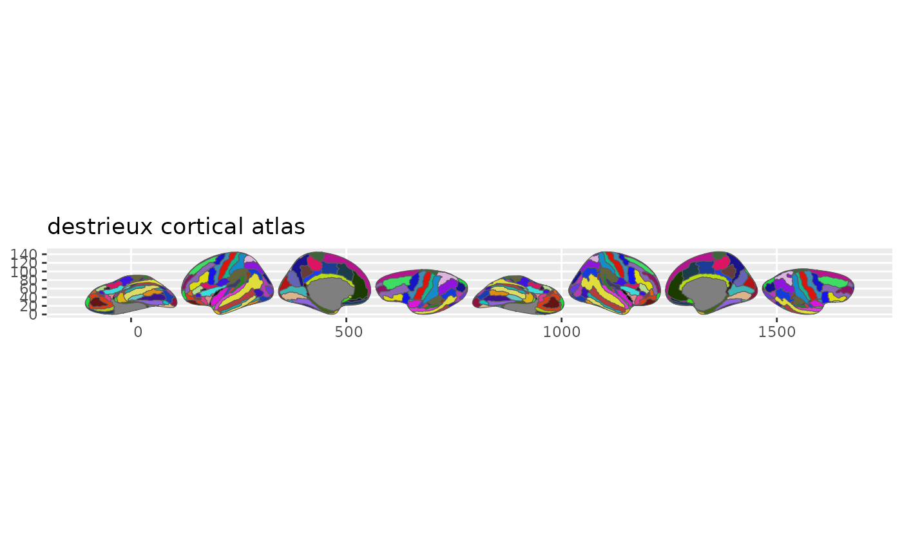

Brain atlas for the Destrieux cortical parcellation
(aparc.a2009s) with 75 regions per hemisphere. Contains 2D
polygon geometry for ggseg::geom_brain().
Value
A ggseg.formats::ggseg_atlas object (cortical).
References
Destrieux C, Fischl B, Dale A, Halgren E (2010). Automatic parcellation of human cortical gyri and sulci using standard anatomical nomenclature. NeuroImage, 53(1), 1-15. doi:10.1016/j.neuroimage.2010.06.010
Examples
destrieux()
#>
#> ── destrieux ggseg atlas ───────────────────────────────────────────────────────
#> Type: cortical
#> Regions: 74
#> Hemispheres: left, right
#> Views: inferior, lateral, medial, superior
#> Palette: ✔
#> Rendering: ✔ ggseg
#> ✔ ggseg3d (vertices)
#> ────────────────────────────────────────────────────────────────────────────────
#> # A tibble: 148 × 3
#> hemi region label
#> <chr> <chr> <chr>
#> 1 left G_and_S_frontomargin lh_G_and_S_frontomargin
#> 2 left G_and_S_occipital_inf lh_G_and_S_occipital_inf
#> 3 left G_and_S_paracentral lh_G_and_S_paracentral
#> 4 left G_and_S_subcentral lh_G_and_S_subcentral
#> 5 left G_and_S_transv_frontopol lh_G_and_S_transv_frontopol
#> 6 left G_and_S_cingul-Ant lh_G_and_S_cingul-Ant
#> 7 left G_and_S_cingul-Mid-Ant lh_G_and_S_cingul-Mid-Ant
#> 8 left G_and_S_cingul-Mid-Post lh_G_and_S_cingul-Mid-Post
#> 9 left G_cingul-Post-dorsal lh_G_cingul-Post-dorsal
#> 10 left G_cingul-Post-ventral lh_G_cingul-Post-ventral
#> 11 left G_cuneus lh_G_cuneus
#> 12 left G_front_inf-Opercular lh_G_front_inf-Opercular
#> 13 left G_front_inf-Orbital lh_G_front_inf-Orbital
#> 14 left G_front_inf-Triangul lh_G_front_inf-Triangul
#> 15 left G_front_middle lh_G_front_middle
#> 16 left G_front_sup lh_G_front_sup
#> 17 left G_Ins_lg_and_S_cent_ins lh_G_Ins_lg_and_S_cent_ins
#> 18 left G_insular_short lh_G_insular_short
#> 19 left G_occipital_middle lh_G_occipital_middle
#> 20 left G_occipital_sup lh_G_occipital_sup
#> 21 left G_oc-temp_lat-fusifor lh_G_oc-temp_lat-fusifor
#> 22 left G_oc-temp_med-Lingual lh_G_oc-temp_med-Lingual
#> 23 left G_oc-temp_med-Parahip lh_G_oc-temp_med-Parahip
#> 24 left G_orbital lh_G_orbital
#> 25 left G_pariet_inf-Angular lh_G_pariet_inf-Angular
#> 26 left G_pariet_inf-Supramar lh_G_pariet_inf-Supramar
#> 27 left G_parietal_sup lh_G_parietal_sup
#> 28 left G_postcentral lh_G_postcentral
#> 29 left G_precentral lh_G_precentral
#> 30 left G_precuneus lh_G_precuneus
#> 31 left G_rectus lh_G_rectus
#> 32 left G_subcallosal lh_G_subcallosal
#> 33 left G_temp_sup-G_T_transv lh_G_temp_sup-G_T_transv
#> 34 left G_temp_sup-Lateral lh_G_temp_sup-Lateral
#> 35 left G_temp_sup-Plan_polar lh_G_temp_sup-Plan_polar
#> 36 left G_temp_sup-Plan_tempo lh_G_temp_sup-Plan_tempo
#> 37 left G_temporal_inf lh_G_temporal_inf
#> 38 left G_temporal_middle lh_G_temporal_middle
#> 39 left Lat_Fis-ant-Horizont lh_Lat_Fis-ant-Horizont
#> 40 left Lat_Fis-ant-Vertical lh_Lat_Fis-ant-Vertical
#> 41 left Lat_Fis-post lh_Lat_Fis-post
#> 42 left Pole_occipital lh_Pole_occipital
#> 43 left Pole_temporal lh_Pole_temporal
#> 44 left S_calcarine lh_S_calcarine
#> 45 left S_central lh_S_central
#> 46 left S_cingul-Marginalis lh_S_cingul-Marginalis
#> 47 left S_circular_insula_ant lh_S_circular_insula_ant
#> 48 left S_circular_insula_inf lh_S_circular_insula_inf
#> 49 left S_circular_insula_sup lh_S_circular_insula_sup
#> 50 left S_collat_transv_ant lh_S_collat_transv_ant
#> 51 left S_collat_transv_post lh_S_collat_transv_post
#> 52 left S_front_inf lh_S_front_inf
#> 53 left S_front_middle lh_S_front_middle
#> 54 left S_front_sup lh_S_front_sup
#> 55 left S_interm_prim-Jensen lh_S_interm_prim-Jensen
#> 56 left S_intrapariet_and_P_trans lh_S_intrapariet_and_P_trans
#> 57 left S_oc_middle_and_Lunatus lh_S_oc_middle_and_Lunatus
#> 58 left S_oc_sup_and_transversal lh_S_oc_sup_and_transversal
#> 59 left S_occipital_ant lh_S_occipital_ant
#> 60 left S_oc-temp_lat lh_S_oc-temp_lat
#> 61 left S_oc-temp_med_and_Lingual lh_S_oc-temp_med_and_Lingual
#> 62 left S_orbital_lateral lh_S_orbital_lateral
#> 63 left S_orbital_med-olfact lh_S_orbital_med-olfact
#> 64 left S_orbital-H_Shaped lh_S_orbital-H_Shaped
#> 65 left S_parieto_occipital lh_S_parieto_occipital
#> 66 left S_pericallosal lh_S_pericallosal
#> 67 left S_postcentral lh_S_postcentral
#> 68 left S_precentral-inf-part lh_S_precentral-inf-part
#> 69 left S_precentral-sup-part lh_S_precentral-sup-part
#> 70 left S_suborbital lh_S_suborbital
#> 71 left S_subparietal lh_S_subparietal
#> 72 left S_temporal_inf lh_S_temporal_inf
#> 73 left S_temporal_sup lh_S_temporal_sup
#> 74 left S_temporal_transverse lh_S_temporal_transverse
#> 75 right G_and_S_frontomargin rh_G_and_S_frontomargin
#> 76 right G_and_S_occipital_inf rh_G_and_S_occipital_inf
#> 77 right G_and_S_paracentral rh_G_and_S_paracentral
#> 78 right G_and_S_subcentral rh_G_and_S_subcentral
#> 79 right G_and_S_transv_frontopol rh_G_and_S_transv_frontopol
#> 80 right G_and_S_cingul-Ant rh_G_and_S_cingul-Ant
#> 81 right G_and_S_cingul-Mid-Ant rh_G_and_S_cingul-Mid-Ant
#> 82 right G_and_S_cingul-Mid-Post rh_G_and_S_cingul-Mid-Post
#> 83 right G_cingul-Post-dorsal rh_G_cingul-Post-dorsal
#> 84 right G_cingul-Post-ventral rh_G_cingul-Post-ventral
#> 85 right G_cuneus rh_G_cuneus
#> 86 right G_front_inf-Opercular rh_G_front_inf-Opercular
#> 87 right G_front_inf-Orbital rh_G_front_inf-Orbital
#> 88 right G_front_inf-Triangul rh_G_front_inf-Triangul
#> 89 right G_front_middle rh_G_front_middle
#> 90 right G_front_sup rh_G_front_sup
#> 91 right G_Ins_lg_and_S_cent_ins rh_G_Ins_lg_and_S_cent_ins
#> 92 right G_insular_short rh_G_insular_short
#> 93 right G_occipital_middle rh_G_occipital_middle
#> 94 right G_occipital_sup rh_G_occipital_sup
#> 95 right G_oc-temp_lat-fusifor rh_G_oc-temp_lat-fusifor
#> 96 right G_oc-temp_med-Lingual rh_G_oc-temp_med-Lingual
#> 97 right G_oc-temp_med-Parahip rh_G_oc-temp_med-Parahip
#> 98 right G_orbital rh_G_orbital
#> 99 right G_pariet_inf-Angular rh_G_pariet_inf-Angular
#> 100 right G_pariet_inf-Supramar rh_G_pariet_inf-Supramar
#> 101 right G_parietal_sup rh_G_parietal_sup
#> 102 right G_postcentral rh_G_postcentral
#> 103 right G_precentral rh_G_precentral
#> 104 right G_precuneus rh_G_precuneus
#> 105 right G_rectus rh_G_rectus
#> 106 right G_subcallosal rh_G_subcallosal
#> 107 right G_temp_sup-G_T_transv rh_G_temp_sup-G_T_transv
#> 108 right G_temp_sup-Lateral rh_G_temp_sup-Lateral
#> 109 right G_temp_sup-Plan_polar rh_G_temp_sup-Plan_polar
#> 110 right G_temp_sup-Plan_tempo rh_G_temp_sup-Plan_tempo
#> 111 right G_temporal_inf rh_G_temporal_inf
#> 112 right G_temporal_middle rh_G_temporal_middle
#> 113 right Lat_Fis-ant-Horizont rh_Lat_Fis-ant-Horizont
#> 114 right Lat_Fis-ant-Vertical rh_Lat_Fis-ant-Vertical
#> 115 right Lat_Fis-post rh_Lat_Fis-post
#> 116 right Pole_occipital rh_Pole_occipital
#> 117 right Pole_temporal rh_Pole_temporal
#> 118 right S_calcarine rh_S_calcarine
#> 119 right S_central rh_S_central
#> 120 right S_cingul-Marginalis rh_S_cingul-Marginalis
#> 121 right S_circular_insula_ant rh_S_circular_insula_ant
#> 122 right S_circular_insula_inf rh_S_circular_insula_inf
#> 123 right S_circular_insula_sup rh_S_circular_insula_sup
#> 124 right S_collat_transv_ant rh_S_collat_transv_ant
#> 125 right S_collat_transv_post rh_S_collat_transv_post
#> 126 right S_front_inf rh_S_front_inf
#> 127 right S_front_middle rh_S_front_middle
#> 128 right S_front_sup rh_S_front_sup
#> 129 right S_interm_prim-Jensen rh_S_interm_prim-Jensen
#> 130 right S_intrapariet_and_P_trans rh_S_intrapariet_and_P_trans
#> 131 right S_oc_middle_and_Lunatus rh_S_oc_middle_and_Lunatus
#> 132 right S_oc_sup_and_transversal rh_S_oc_sup_and_transversal
#> 133 right S_occipital_ant rh_S_occipital_ant
#> 134 right S_oc-temp_lat rh_S_oc-temp_lat
#> 135 right S_oc-temp_med_and_Lingual rh_S_oc-temp_med_and_Lingual
#> 136 right S_orbital_lateral rh_S_orbital_lateral
#> 137 right S_orbital_med-olfact rh_S_orbital_med-olfact
#> 138 right S_orbital-H_Shaped rh_S_orbital-H_Shaped
#> 139 right S_parieto_occipital rh_S_parieto_occipital
#> 140 right S_pericallosal rh_S_pericallosal
#> 141 right S_postcentral rh_S_postcentral
#> 142 right S_precentral-inf-part rh_S_precentral-inf-part
#> 143 right S_precentral-sup-part rh_S_precentral-sup-part
#> 144 right S_suborbital rh_S_suborbital
#> 145 right S_subparietal rh_S_subparietal
#> 146 right S_temporal_inf rh_S_temporal_inf
#> 147 right S_temporal_sup rh_S_temporal_sup
#> 148 right S_temporal_transverse rh_S_temporal_transverse
plot(destrieux())
